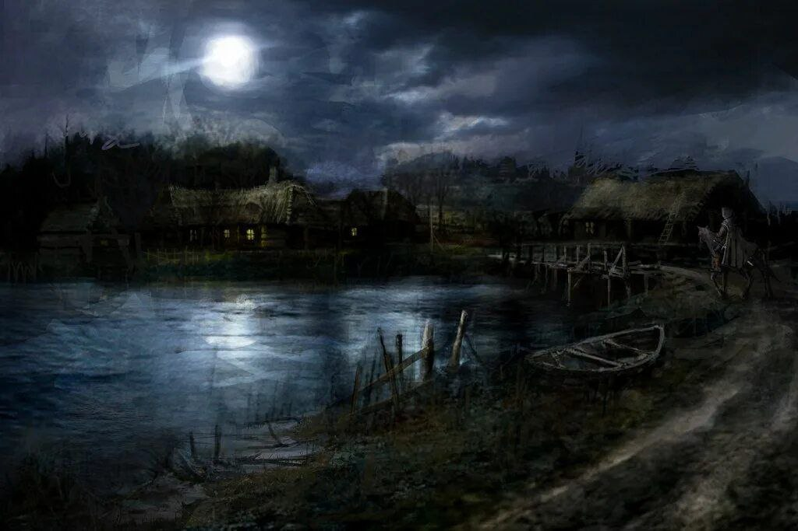
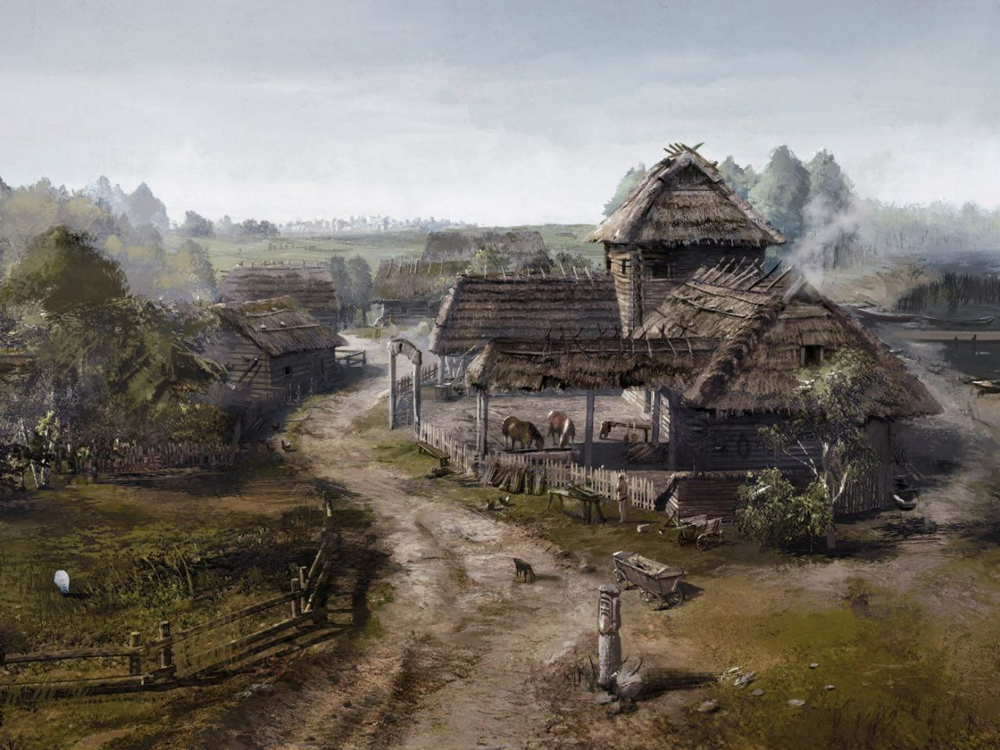
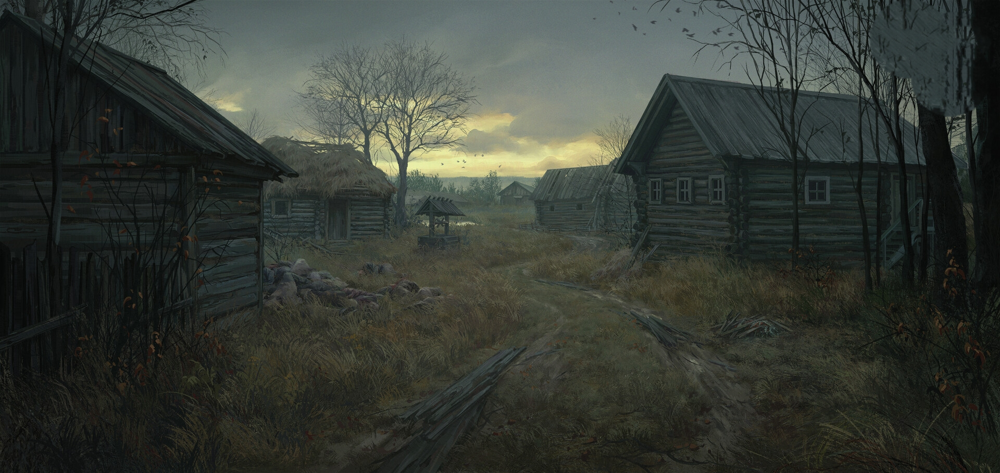

Деревня Окольное всегда славилась своим знаменитым колодцем который обеспечивал несколько деревень вокруг себя.

Сама деревенька находится рядышком с дремучим хвойным лесом на границе регионов, так же соседствует с деревней "Белая" находятся они так близко, что жители переодически жалуются на шум и визги животных из заброшенных домов Белой. И раньше даже имели общее с ней кладбище, разделяет деревни край небольшого озера и лесополоса.

Долгий путь по равнинам и лесостепи вёл вас к огонькам вдали. Это оказалась деревня, она выглядела более мелкой чем те, что вы могли видеть вдали по пути к ней. Пожухлая, больше похожая на заброшенное место, эта горстка домов дай бог десять или пятнадцать, в центре нее стоял высокий деревянный крест перед которым был довольно большой колодец. В центре деревни помимо колодца находится три крупных дома, на одном красуется покосившаяся вывеска "Купцы и Товары", на втором "Кабак", а третий имел два этажа и находился немного поодаль остальных, казалось бы на самом краю, на нем не было вывесок.

Вскоре вы пересекли чертог деревни и вам предстала довольно стумная картина: было тихо, не было гогота пьяниц, деревенской суеты и смеха, лишь хмурые лица людей, которые занимались своими делами. Они очень косо смотрели на вас, под вашими ногами была сухая жёсткая трава которая даже немного похрустывала вперемешку с пылью. Стоит заметить, что в деревне совсем нет живности, кроме собак, которые стайками бегают по всей округе и постоянно лаят. В этом месте всегда очень сильно разит псиной и шерстью, а заезжих купцов совсем нет. Народ питается тем, что вырастил сам на истощавшей земле, кто-то наверняка держит скот, о чем могут говорить закрытые на замки амбары, стоящие на окраине.
Деревня Окольное покажется вам не самым хорошим местом, однако такие времена, такие условия...